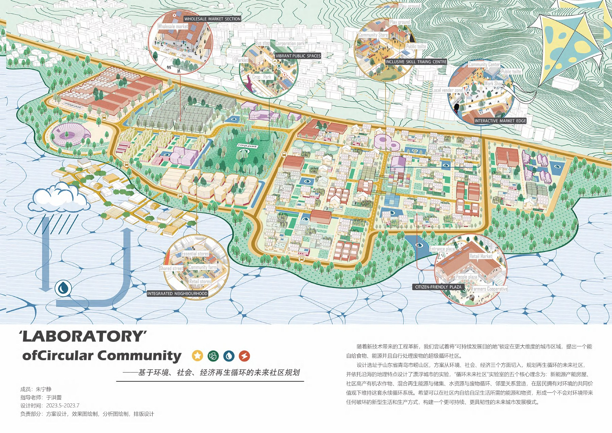

Future community planning
Circular Community
以环境、社会与经济再生循环为核心，把未来社区设想成一座开放的生活实验室。
- Type
- 未来社区规划
- System
- 环境 × 社会 × 经济
- Prototype
- 可组装模块单元

Project boards · 03—07
一套从概念到构造的完整系统
本项目保留原作品画板的叙事顺序，并以网页章节重新组织浏览节奏。点击每张画板可查看完整细节。
Jean Zhu · Project 04 / 05
下一个项目 05 →Future community planning
以环境、社会与经济再生循环为核心，把未来社区设想成一座开放的生活实验室。

Project boards · 03—07
本项目保留原作品画板的叙事顺序，并以网页章节重新组织浏览节奏。点击每张画板可查看完整细节。